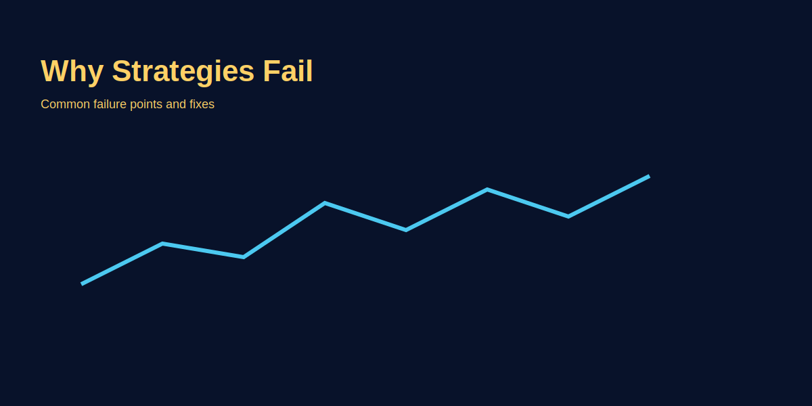

Why Strategies Fail
Problem-based introduction
Many traders build strategies that look good historically but fail live. This article explores common reasons (overfitting, ignoring costs, psychological mismatch) and practical fixes, illustrated with GOLD examples.
Step-by-step explanation
- Overfitting: Optimising parameters to past noise not future edge.
- Ignoring costs: Spread, commission and slippage can destroy edge if not accounted for.
- Psychology mismatch: Strategy rules must match trader's capacity to follow them under stress.
The Three Core Reasons Strategies Fail
1. Overfitting — Optimizing to Past Noise
Trader backtests a EURUSD breakout strategy on 2023 data. They tweak RSI threshold from 70 to 68 to 66—each time improving win rate from 55% to 63%. They optimize MA period from 50 to 47 to 44—now 68% win rate. They go live, 2024 data: 45% win rate. What happened? They optimized parameters to 2023 noise, not real edge.
Why it fails: More parameters = more overfitting. Past data is finite, noise-full. Optimal parameters for 2023 ≠ optimal for 2024. When you optimize 5+ parameters, you're likely fitting noise (overfitting).
Fix: (1) Use out-of-sample testing (backtest on 2023, validate on 2024). (2) Limit parameters to 2-3 max. (3) Use walk-forward analysis (optimize 6 months, test next 3 months, repeat). (4) Check parameter robustness: If win rate drops 20% when you change MA from 50 to 45, parameter is unstable. Abandon it.
2. Ignoring Costs — Spread, Slippage, Commission
Trader's backtest shows 60% win rate, average win 50 pips, average loss 40 pips. Expected value: (0.6 × 50) - (0.4 × 40) = 30 - 16 = 14 pips/trade. Seems profitable. But in reality: EURUSD spread = 1-2 pips, slippage on entry = 3 pips, slippage on exit = 3 pips. Real net profit: 50 - 8 (costs) = 42 pips/win, 40 + 8 = 48 pips/loss. New EV: (0.6 × 42) - (0.4 × 48) = 25.2 - 19.2 = 6 pips/trade. Still profitable but 80% lower than backtest suggested. Trader expected bigger profits, gets frustrated, quits.
Fix: Include realistic costs in backtest. GOLD spread = 1-3 pips, slippage = 2-5 pips (depending on execution). Subtract from each win. If strategy still profitable after costs, it's real edge.
3. Psychology Mismatch — Rules Don't Match Your Stress Tolerance
Trader backtests a breakout strategy: Entry rules clear, exit rules clear, 55% win rate. Backtest looks good. But live, when price drops 50 pips after entry and strategy says "hold," trader panics and closes trade at -50 loss. Strategy would have exited at -40 (stop). Trader's emotional override = -10 extra pips per trade × 20 trades/month = -200 pips/month loss. Strategy was profitable; trader's psychology broke it.
Fix: (1) Paper trade first (30-50 trades). See if you can follow rules without emotion. (2) Simplify rules if they feel complex under stress. (3) Use automated systems if possible (removes emotion). (4) Small position size at start (less stress = easier to follow rules).
How To Backtest Correctly (Avoiding Failures)
Step 1: Set Rule Parameters (Don't Optimize Yet)
Entry: "Price breaks above 20-candle high on 4H." Exit: "Stop 20 pips below entry, target 50 pips above." RSI > 50 confirmation. These are your rules, not optimized.
Step 2: Backtest on ONE Pair, ONE Timeframe for 50-100 Trades
Use 6-12 months of historical data. Count wins/losses. If <50% win rate, rethink rules (maybe breakout is too risky without additional filter). If >55% win rate, proceed.
Step 3: Add Realistic Costs
Subtract spread + slippage from each win. If strategy still 52%+ win rate after costs, it has real edge.
Step 4: Test Parameter Robustness
Change one parameter slightly (MA from 20 to 22, RSI threshold from 50 to 48). Retest. If win rate drops >10%, parameter is unstable. Abandon it or use wider range.
Step 5: Out-of-Sample Test
Backtest on 2023 data, then validate (no optimization) on 2024 data. If 2024 win rate drops <10% vs 2023, strategy is robust. If drops >15%, overfitting suspected.
Step 6: Paper Trade 30-50 Trades
Simulate live without real money. Can you follow rules? If you deviate, it's a psychology issue, not strategy issue. Adjust rules or position size to reduce stress.
Step 7: Go Live Small
Risk 0.5% per trade (not 2%). Track live metrics: Win rate, average win/loss. If <50% win rate, shut down immediately (backtest was wrong or market changed). If 50-55%, optimize costs or rules. If 55%+, increase size gradually.
Common Strategy Failure Patterns (GOLD Examples)
Pattern 1: Breakout strategies fail after large moves. Strategy profitable breakout trading on quiet weeks. During volatile weeks (Fed news), breakouts whipsaw. Fix: Add ATR filter. Skip trades when ATR > normal (avoid event risk).
Pattern 2: Support/resistance strategies fail in choppy markets. Strategy profitable in trending markets. In ranges, price bounces between S/R multiple times, triggering multiple losses. Fix: Add trend filter (ADX > 25 for trending, skip if ADX < 20 choppy).
Pattern 3: Indicator-based strategies fail when parameters shift. MACD crossover strategy works Jan-Mar (fast market), fails Apr-Jun (choppy). Parameters haven't changed, market has. Fix: Add market condition detection (volatility, ATR). Disable strategy in low-volatility periods.
Real trading logic (GOLD example)
Backtest a GOLD breakout strategy including realistic spreads, slippage, and execution delays. If live performance differs, examine parameter robustness and reduce over-optimization.
Image-based examples (mandatory)
Annotated backtest vs live P&L comparison and checklist for fixes.
Common Mistakes
- Cherry-picking best parameters without out-of-sample testing. You test 100 parameter combinations, pick the best (75% win). Go live, 40% win. The best backtest was overfitted. Always validate on out-of-sample data.
- Not including realistic transaction costs in simulation. Strategy looks 60% win profitable. Add real spreads/slippage, now 51% win. Barely profitable after costs, not worth the risk. Always include costs upfront.
Pro Tips
- Use out-of-sample testing, walk-forward analysis, and include costs. Backtest on 2023, validate on 2024 (no re-optimization). If performance drops <10%, strategy is robust. If drops >20%, overfitting likely.
- Start small live and compare metrics; iterate only when you have consistent evidence. Paper trade 30 trades first. Go live 0.5% risk/trade for 30 trades. Track win %, average win, average loss. Only then iterate or increase size.
Risk Warning
No strategy is guaranteed—evaluate robustness and preserve capital during testing phases.
SEO FAQs
- 1. Strategy overfitting kaise check karein?
- Simple: (1) Backtest on 2023, validate (no re-optimization) on 2024. If win rate drops <10%, robust. If drops >15%, overfitting. (2) Test on different pairs/timeframes. If strategy works EURUSD 4H but fails GOLD 4H, overfitted to EURUSD.
- 2. Kya Monte Carlo testing useful hai?
- Yes. Monte Carlo shuffles trade sequence randomly, tests if profit depends on luck or edge. Run 1000 random sequences. If 95%+ are profitable, edge is real. If 60-70% profitable, edge is fragile (sequence-dependent, risky).
- 3. Live performance vs backtest mein gap kyun hota hai?
- Reasons: (1) Overfitting. (2) Costs not included (spread, slippage). (3) Execution differences (slippage bigger than expected). (4) Market regime changed. (5) Psychology override. Fix: Backtest with realistic costs + out-of-sample validation + paper trade before live.
- 4. Backtest kitne saal ka data use karein?
- Minimum 1-2 years (250+ trading days) for robustness. More data = better validation. But too old data (10+ years) may not reflect current market conditions. Sweet spot: 2-5 years of recent data.
- 5. Walk-forward analysis kya hai simple terms mein?
- Split data: (1) Optimize on Jan-Jun. (2) Test (no changes) on Jul-Sep. (3) Repeat: Optimize Oct-Dec, test Jan-Mar next year. This simulates real trading (optimize, trade, learn, repeat) and prevents overfitting.
- 6. Strategy fail to aur restart kaise karein?
- Don't restart immediately after 10 losing trades. Likely just variance (normal). Wait 30-50 trades. If win rate <48% after 50 trades, strategy failed: (1) Market changed (add adaptive filters). (2) Overfitted (simplify rules). (3) Costs higher than expected (reduce position size). Investigate root cause before restarting.
- 7. Parameter optimization: Kitne parameters OK hain?
- Max 2-3. More = overfitting risk. Example good: MA period (1 param) + RSI threshold (1 param). Bad: MA, RSI, MACD threshold, Stochastic settings, Bollinger Band width (5 params = high overfitting risk).
- 8. Slippage prediction: Real slippage kitna hota hai?
- Depends on: (1) Instrument (EURUSD: 1-2 pips, GOLD: 2-5 pips), (2) Execution method (market order: more slippage, limit order: less), (3) Time (major events: 5-10 pips, quiet: 1-2 pips). Add 2-5 pips per trade in backtest conservatively.
- 9. Strategy psychology test kaise karein?
- Paper trade 30-50 trades. Track: (1) How many times you deviated from rules? (2) When did you deviate (after losses? winning streak?). If >20% deviation, rules too complex or position size too large. Simplify or reduce size.
- 10. Live vs backtest variance: Kitna acceptable hai?
- After 30-50 live trades: ±10% variance acceptable (backtest 55% win, live 50% = normal). ±15% variance = caution (investigate). >20% variance = problem (overfitting or market changed). Investigate root cause before continuing.